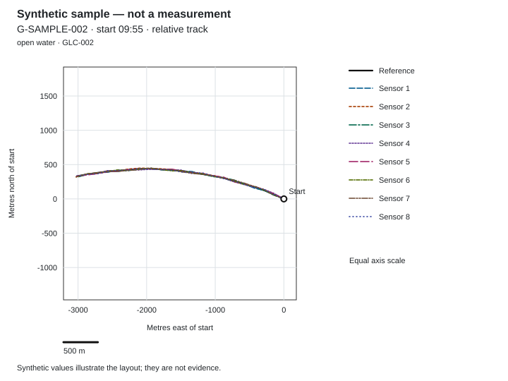

This paper examines how an organisation sets an evaluation method, reads position records and decides whether its implementation meets the intended task.
Who this paper is for
Executives deciding whether to license and build a positioning implementation can use the paper to set acceptance criteria before assessing the evidence. The licensee’s engineering teams can connect the sensor hardware, mounting, platform integration and application to the configuration and reference used in an assessment. Operators and end users of equipment using position output can relate an evaluation to the information their task requires. Students and researchers can use the definitions and scientific background references to distinguish a run’s summary from the conditions and reference needed to interpret it.
Questions covered
- Why must the evaluation method and acceptance criteria be fixed before the position records are read?
- What makes a reference appropriate to the setting, and how are its observations paired with calculated positions?
- How does a common start point preserve the relationship between positions while withholding absolute locations?
- How should per-point deviation and per-sensor summaries be read together?
- What can a run establish, and how does a series extend the conditions represented?
- What context accompanies a recorded run when it is approved for the validation and demonstration-record pages?
- What must an organisation specify about its installation, application and assessment responsibilities before accepting its own implementation?
Abstract
A positioning evaluation needs an agreed method before its figures can inform an implementation decision. The reference source, the pairing of observations and the meaning of deviation determine what a reported number describes. NSATS’s own research and development (R&D) demonstration arrangement uses eight sensors; its records relate calculated positions to an independent reference in metres north and east of a common start point. This paper explains how to read that relationship, distinguish a point from a run summary and recognise the limits of a series. A synthetic sample illustrates the track, table and per-point calculation without supplying measurement evidence. For an organisation considering an implementation, acceptance depends on its own equipment, operating conditions and application requirements, assessed against definitions fixed before the work begins.
Why the method is fixed before the figures are read
An inspection record and an operator display use position differently. The record associates a finding with where it was made; the display needs information relevant to the equipment’s changing position. An evaluation starts by identifying that task and the position information needed to perform it. A numerical summary becomes useful when the reader knows which requirement it addresses.
NSATS’s geomagnetic technology determines location from measurements of Earth’s magnetic field, processed with NSATS’s proprietary noise filtering, without reliance on live GPS satellite signals. Its evaluation therefore separates the magnetic observations, the calculated position and the independent position record used for assessment. The first paper in this series, Geomagnetic positioning without live satellite signals: what is measured and what is calculated, provides the vocabulary for these distinctions.
The same position records can produce different numerical summaries under different definitions. A percentage expressed relative to a recent movement describes a different relationship from one expressed relative to the entire route. Including the common starting point also changes the collection being summarised. These choices belong in the assessment method before any numbers are interpreted.
The method identifies the reference source, observation sequence, pairing of positions and treatment of exclusions. It also records the platform, software version, mounting, setup and conditions relevant to the task. If equipment restarts or its configuration changes during an assessment, the record identifies the affected observations. This allows a reviewer to connect a summary to the work it actually represents.
An acceptance criterion then states the behaviour the application requires. Choosing the criterion after examining the figures can make acceptance depend on the collected data rather than the application’s requirement. The organisation should retain individual observations, including occasions when the output cannot support the task, so that a favourable summary does not conceal an unsuitable stage of operation.
Positioning from Earth’s magnetic field · How positioning is evaluated
Reference sources by setting
The reference position is obtained separately from the calculated output and used to assess it. Although often called “ground truth”, it has a source, conditions of use and uncertainty of its own. In measurement terminology, a reference value supplies the basis for assessment against values of the same quantity; its associated uncertainty remains relevant. 1
A satellite GPS receiver on the same platform can provide a reference position record for the platform’s movement. The evaluator must establish which reference observation corresponds to each calculated position and whether both concern the same object. A receiver’s presence on a platform does not by itself establish that its observation represents the sensor’s position at the same event.
Reception conditions also matter. Obstruction and reflection can affect the signals reaching a satellite receiver. The assessment describes the reference information available under those conditions and the limits attached to it. Using a satellite reference during evaluation does not establish a dependence on live satellite signals during geomagnetic positioning: the record distinguishes assessment-only information from information entering the positioning calculation.
A surveyed floor plan provides a spatial reference for positions within the surveyed area. To assess a moving device, the evaluator still needs to identify where that device was on the plan at each observation. The plan alone does not establish the timing of movement or the position between identified observations. The record therefore explains the relationship between the survey, the assessed object and the observation sequence.
For a laboratory assessment, the reference is the laboratory’s rail position encoder record. It provides the reference trajectory to which the calculated positions are related. The assessment describes how observations are paired and which part of the laboratory movement they represent. A laboratory record can support findings within those stated conditions; its existence does not establish behaviour on a different platform or in another setting.
For technical readers: independence concerns the information path as well as the reference’s name. An assessment reference must be obtained separately from the output under examination. Information supplied during setup, information used during positioning and information retained only for assessment have distinct roles. Identifying those roles prevents agreement with a reference from being mistaken for an independent check when the same information has entered both sides.
Positioning without GPS satellite signals
The start-point convention
Every run begins at a known start point. The public record identifies that point by a location code and expresses reference and calculated positions as metres north and east of it. Absolute locations are withheld. Both sets of positions retain the same origin, units and directional frame.
This common frame preserves the relationship needed to read the horizontal track and the separation between paired positions. Withholding the absolute location does not remove those relative distances. The reader still needs the setting, movement case and reference description to understand what the run represents; a location code does not supply that context by itself.
The origin has a limited role. It establishes where relative positions begin, while the reference record supplies the positions associated with later observations. Agreement at the starting origin cannot establish agreement along the subsequent route. The start point is therefore identified explicitly rather than treated as an ordinary assessed point.
Point sequence and elapsed seconds preserve the order of observations. A displayed position can then be associated with its observation event, including whether it belongs to an earlier event retained by the application. This distinction matters when equipment continues moving after a position was obtained.
Where elevation is included in a record, both reference and calculated elevations are relative to the reference elevation at the start point, so that any initial offset stays visible. Elevation is separate from the horizontal deviation considered here; the record does not derive a vertical deviation.
For technical readers: a relative track is a way of presenting positions for assessment. It does not describe the method by which magnetic measurements become a position. The implementation plan separately identifies how the starting reference is established and supplied during setup.
Deviation at each point
At each point the arrangement calculates a position afresh. Deviation is the horizontal distance between the calculated position and the reference position at that point. As a percentage, it is that distance divided by the distance moved since the previous point, multiplied by 100. The start point has no previous point and is excluded.
The distance moved is the reference step for that observation. It is distinct from the position’s distance from the origin and from the total reference path length. A run header may give that path length as the sum of the reference steps, but it does not become the denominator for per-point percentage deviation.
A later observation with no reference movement keeps its deviation in metres. Its percentage is undefined and is excluded from percentage summaries; the record states how many such points occurred. A stationary run reports metres only. These conventions preserve useful positional information without presenting an undefined percentage as zero.
One point of a run (synthetic sample — not a measurement)
The following example is a synthetic sample — not a measurement. It illustrates how to read the fields for run G-SAMPLE-002, point 1, Sensor 1, at 30 seconds elapsed; the values illustrate the definition and nothing about the arrangement.
- Reference step: 156.93 m.
- Reference position: 63.91 m north and -143.33 m east of the start.
- Calculated position: 57.19 m north and -154.31 m east of the same start.
- Horizontal deviation: 12.87 m.
- Percentage deviation: 8.2%.
The percentage entry expresses 12.87 m against the 156.93 m reference step. The displayed values are rounded: metres have two decimal places and percentages one. The example gives the reported entries without adding a calculation from rounded positions.
Track and summary of a run (synthetic sample — not a measurement)

Figure 1. Synthetic sample — not a measurement; illustrates the relative reference-track and sensor-track layout. Run G-SAMPLE-002.
Text alternative: The solid black reference path and labelled dashed sensor paths share axes showing metres east and north of the start point. Gridlines, line styles and labels distinguish the paths without relying on colour alone.
The illustration places the reference and calculated tracks in one frame. It provides a reading layout for following their positions, while the per-point entries identify the paired observations. A track’s visual appearance does not replace those entries or the definition used to assess them.
| Sensor | Min (m) | Median (m) | Max (m) | Min (%) | Median (%) | Max (%) |
|---|---|---|---|---|---|---|
| Sensor 1 | 3.54 | 9.92 | 17.98 | 2.2 | 6.3 | 11.8 |
| Sensor 2 | 3.88 | 11.85 | 18.18 | 2.4 | 7.8 | 11.9 |
| Sensor 3 | 3.67 | 9.53 | 18.54 | 2.4 | 6.2 | 11.8 |
| Sensor 4 | 3.77 | 14.50 | 18.33 | 2.3 | 9.4 | 11.8 |
| Sensor 5 | 4.39 | 12.15 | 19.03 | 2.9 | 7.7 | 12.0 |
| Sensor 6 | 4.17 | 12.29 | 18.91 | 2.7 | 8.2 | 11.8 |
| Sensor 7 | 2.96 | 11.07 | 18.51 | 2.0 | 7.1 | 11.5 |
| Sensor 8 | 3.24 | 8.66 | 18.08 | 2.1 | 5.5 | 11.5 |
| Across eight sensors | 2.96 | 11.56 | 19.03 | 2.0 | 7.6 | 12.0 |
Table 1. Synthetic sample — not a measurement; illustrates the per-sensor and combined min/median/max layout; point 0 excluded. Run G-SAMPLE-002.
The table illustrates separate metre and percentage summaries for each sensor, followed by a combined row. It supplies no measured finding about NSATS’s arrangement and no acceptance threshold for an implementation.
Reading a run: the per-sensor band
In a recorded run, each sensor row retains the association between that sensor and its reported position entries. Minimum and maximum identify the ends of the included values; the median describes their centre. Reading all three prevents the central figure from being treated as if it described every point.
The median is found by ordering the included values. It is the middle value where there is an odd number of entries, or the mean of the middle pair where there is an even number. It is distinct from the arithmetic mean of all entries. 2
The combined row summarises the included entries across the eight sensors in that run. It does not describe an additional sensor or a separately calculated track. A combined median also does not replace the individual sensor rows: retaining those rows lets the reader see the summaries attached to each source.
Metre and percentage columns need to be read together because they describe different aspects of the same paired positions. The reference step supplies context for the percentage at each point. A summary without the step convention or observation sequence would leave that context unclear.
Across recorded runs, an observed band describes the values covered by the runs included, with their movement cases and settings identified. No average across runs is published. Combining different movements and conditions into one average would detach the figure from the circumstances an organisation needs to assess. The observed band remains a description of the included records, without projecting values for later runs.
For technical readers: neither the minimum-to-maximum span nor the median defines a measurement-uncertainty interval. They summarise the retained deviations. Reference uncertainty, observation pairing and the circumstances of collection remain separate parts of interpretation. Exclusions must remain visible, particularly where metre and percentage summaries include different sets because of zero-step points.
One run and a series
A single recorded run concerns one configuration under its stated conditions. Its duration, movement and surrounding activity limit the task it represents. It cannot establish behaviour in an unrepresented setting or determine whether a licensee’s different installation meets its requirements.
A series extends the set of recorded circumstances. Keeping the definitions and record layout consistent allows the reviewer to follow the observations across runs while retaining the distinctions between them. A change of sensor, mounting, software or surrounding structure belongs in the configuration record; otherwise a difference between runs can be detached from the change that accompanied it.
Repeated work under specified conditions addresses a different question from work across changing conditions. The measurement vocabulary defines repeatability conditions as the same measurement procedure, operators, measuring system, operating conditions and location, with replicate measurements on the same or similar objects over a short period. A series extending over different conditions needs those differences stated rather than being described simply as repeatability. 3
Movement case and setting organise this reading. The movement case describes the platform’s activity; the setting describes its surroundings. Either can change while the other remains similar. Keeping both attached to each run allows an organisation to identify which parts of its intended task are represented and which require its own assessment.
Indoor, underground, underwater and dense urban use are intended application directions. They are not established by a run from another setting. The next paper, Movement cases for validation: vessels, aircraft, land vehicles and the laboratory, considers the movement cases and the questions they are intended to examine.
Underground, on the ground and in the air
Where recorded runs appear
The Validation results and Geomagnetism demonstration records pages are where recorded runs of NSATS’s own R&D demonstration arrangement appear, each once it has been approved.
Each recorded run is approved individually. The validation page changes when an approved run is added, and identifies the latest addition by run ID. A demonstration record connects the purpose and setup with the reference, observations and limitations, so its numerical entries remain attached to the assessed work.
Public records use a start time and elapsed seconds. A series uses run sequence, while location codes and relative positions keep absolute locations withheld. The settings and movement cases remain available to explain the scope of the observations.
An organisation should read a recorded run as evidence about the arrangement and conditions it describes. The synthetic illustrations in this paper show how such a record is read; they are not evidence about the arrangement.
Applications and licensed intellectual property
The evaluation belongs to the licensee’s intended positioning task. An inspection application needs a usable association between a finding and its position; an operator display needs position information appropriate to the movement it follows. The surrounding application determines how an output is retained, presented or acted upon.
NSATS licenses its intellectual property: patents, designs and copyrighted software. Where the licensed IP takes the form of software, NSATS supplies it under the licence, with its documentation and updates. Each licensee designs and builds its own solution.
The licensee’s installation guidance identifies its sensor arrangement, mounting, processing equipment, power supply and software version. Calibration depends on the selected sensor and follows the manufacturer’s procedure where one is provided. The guidance records whether it was performed and the magnetic-environment check made before positioning use. These details establish which configuration an assessment concerns.
Confirming that an installed configuration produces position output is distinct from accepting that output for a task. The assessment must connect the output to the application’s requirement, including what happens when an earlier position is retained or a new output cannot support the intended action.
Geomagnetism IP licensing · Installation and calibration guidance
The executive decision
Before accepting its implementation, an organisation needs an evaluation plan that applies the definitions in this paper to its own equipment and task. The following questions connect those definitions to that plan.
- Position requirement: What position information does the application require, and by what criteria will it be accepted?
- Reference: Which independent reference is available in each setting, what are its limitations, and how will observations be paired with calculated positions?
- Configuration: How will the starting reference, installation configuration and setup be recorded, and which changes during operation will be logged against the observations?
- Representation: Which movement cases, stationary stages and surrounding activity will the assessment represent?
- Conventions: How will the start point, later zero-step points, exclusions and run summaries be handled?
- Responsibility: Who records the work, reviews the evidence and decides whether the intended use is supported?
Evaluation material for Geomagnetism is agreed and supplied under a non-disclosure agreement through the licensing enquiry. The public demonstration documentation on the Manuals and SDK pages is the material available without an agreement; permissions for other evaluation material are set by the agreement. The organisation should define the assessment question and required access before treating a discussion as an evaluation arrangement.
How positioning is evaluated · Evaluation and technical diligence
Scientific background references
These sources explain reference values, statistical summaries and measurement conditions. They provide scientific background to evaluation, not evidence of NSATS’s performance or an account of its proprietary calculation.
- Joint Committee for Guides in Metrology. International vocabulary of metrology: reference quantity value, section 5.18. jcgm.bipm.org/vim/en/5.18.html.
- NIST/SEMATECH. e-Handbook of Statistical Methods: Measures of Location, section 1.3.5.1. itl.nist.gov/div898/handbook/eda/section3/eda351.htm.
- Joint Committee for Guides in Metrology. International vocabulary of metrology: repeatability condition of measurement, section 2.20. jcgm.bipm.org/vim/en/2.20.html.
Related reading
White papers · Positioning from Earth’s magnetic field · Positioning without GPS satellite signals · Underground, on the ground and in the air · How positioning is evaluated
Validation results · Geomagnetism demonstration records · Geomagnetism IP licensing · Evaluation and technical diligence · Installation and calibration guidance
Geomagnetic positioning without live satellite signals: what is measured and what is calculated · Movement cases for validation: vessels, aircraft, land vehicles and the laboratory · Magnetic disturbance and noise: what filtering is expected to handle and what it is not · Security considerations for positioning that does not depend on external signals
Related pages: GR-PAPERS — White papers, GT-POS — Positioning from Earth’s magnetic field, GT-GPS — Positioning without GPS satellite signals, GT-ENV — Underground, on the ground and in the air, GR-METHODS — How positioning is evaluated, GR-VALID — Validation results, GR-DEMOS — Geomagnetism demonstration records, GL-HOME — Geomagnetism IP licensing, GL-EVAL — Evaluation and technical diligence, GI-INSTALL — Installation and calibration guidance, GWP-01 — Geomagnetic positioning without live satellite signals: what is measured and what is calculated, GWP-03 — Movement cases for validation: vessels, aircraft, land vehicles and the laboratory, GWP-04 — Magnetic disturbance and noise: what filtering is expected to handle and what it is not, GWP-05 — Security considerations for positioning that does not depend on external signals